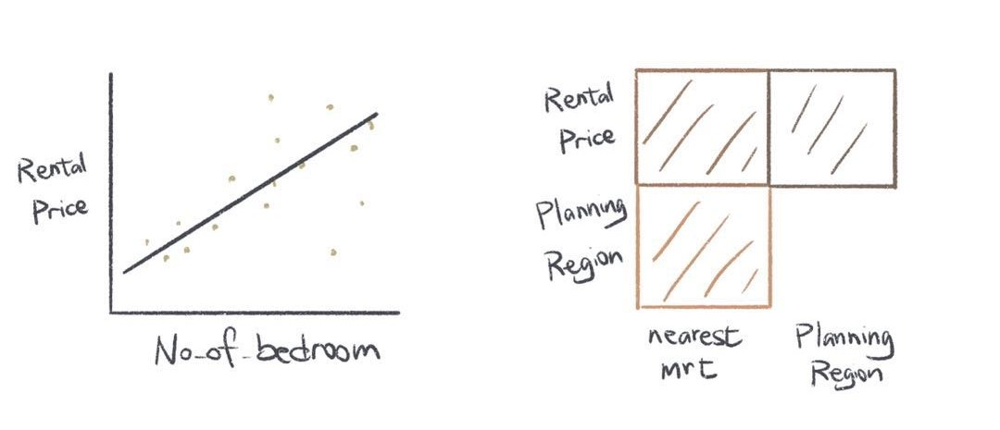
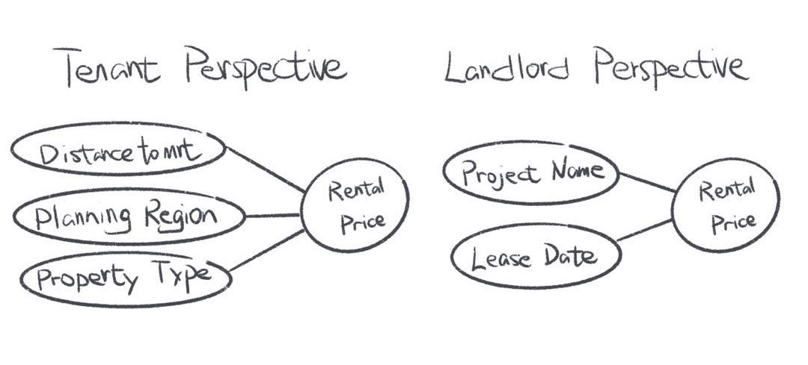

1 Project Motivation
Singapore is a multi-racial immigrant country, and as the population continues to increase, housing and rental prices are also on the rise. This makes it challenging for many people to find appropriate housing. The motivation for the project stems from an interest in the current state of the rental market in Singapore and a desire to gain a deeper understanding of future changes in rental prices.
With the constant fluctuation of the housing market, the rising rent price has a certain impact on the living burden of residents. Therefore, our team wanted to analyze past rental price data to reveal underlying trends and provide more accurate information for future rental decisions.
2 Problem Statement
To better meet the needs of renters, our project aims to solve the problem of how to accurately predict the future trend of housing rental prices in various districts in Singapore.
Resolving this issue is crucial for renters and housing market participants to provide clear insight into future rental price changes. By analyzing past rental data in depth, we hope to be able to build reliable models to predict the trend of rental prices in different regions and provide renters with more informed decisions.
Our goal is to create an effective predictive model to help renters better understand the future evolution of the rental market, thereby enabling them to make informed, data-based rental decisions. By addressing this issue, we can provide renters with more confidence and transparency and help them better adapt to the changing renting environment.
3 Data Preparation
Our team found data on the following websites:
To build our predictive model, we plan to take detailed data related to past home rents and thoroughly clean and collate that data. We will collect data sets that include the following key information:
Lease_Commencement_Date: Keeping track of when each lease took effect allows us to analyze rent trends over time.
Project_Name: Identify the specific neighborhood in which the rental property is located.
Street_Name: Recording the name of the street on which the house is located helps to locate the property more precisely.
Planning_Region: Provide more detailed geographic information to help us break down the data by region and further analyze the rental situation in different regions.
Property_Type: Identify the type of house.
Monthly_Rent_SGD: Recording the monthly rental cost is the target variable in our model.
Floor_Area_SQM_Avg: Provide information about the size of the home, one of the important factors affecting rent pricing.
No_of_Bedroom: Keeping track of the number of bedrooms in the house has an impact on the rent.
nearest_mrt: Indicates the nearest metro station, taking into account the impact of transport accessibility on rent.
distance_to_mrt: Record the distance from the house to the nearest metro station to measure accessibility.
latitude/longitude: Provides coordinate information of the exact location of the house for geospatial analysis and visualization.
There is also some other information that will be reflected in the data set. By collating and cleaning up this detailed and diverse data, we will be able to build a comprehensive dataset that will provide a solid foundation for the construction of predictive models. Such a data set will allow us to gain insight into the factors that influence rents and more accurately predict future rental prices.
4 Solution Approach & Early Prototype
We will use R Shiny to build a web-enabled visual analytics application to analyze and predict the future rental prices of housing in Singapore. There are three main steps:
4.2 Correlation Exploration
In the second part, we will delve into the correlations between the different factors. This covers the study of linear and nonlinear correlations, as well as the strength and direction of the relationships. Through this step, we can identify the factors that have the greatest impact on rent and provide users with more accurate rental information.

4.3 Prediction Model
In the final part of the proposal, we will build a powerful predictive model for predicting changes in housing rents under different input information. This model will consider various factors, such as location, home size, transportation accessibility, etc., to provide users with a reliable rent forecast. With this innovative forecasting model, users can better understand rental trends and make informed rental decisions.

Through the integrated implementation of these three parts, our solution aims to provide users with comprehensive, accurate and predictive rental information, enabling them to make more informed rental decisions.
5 R Libraries
Below is a non-exhaustive list of R libraries we will be using for our study:
Caret (Predictive regression models)
Time Series (R time series analysis tools)
Tidyverse (Data manipulation)
Ggplot2 (Data visualisation)